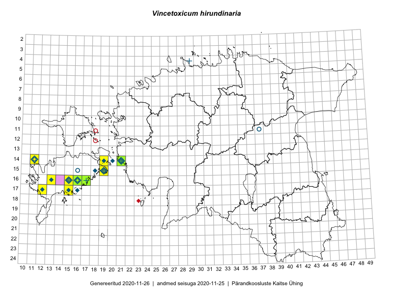

Vincetoxicum hirundinaria
Uuendatud: 2016-12-02
Kaardile koondatud taksonid: Vincetoxicum hirundinaria Medik.

Kaart põhineb 17 kirjel, neist vaatlusi 16 ja eksemplare 1. Taksonit on leitud 8 ruudust.
Viited andmebaasikirjetele
- Meeli Mesipuu: 2015-06-21: 15-19: ala
- Meeli Mesipuu: 2015-06-21: 15-19: GPS punkt
- Mari Reitalu: 2015-06-19: 17-12: ala
- Mari Reitalu: 2015-06-19: 17-12: GPS punkt
- Kai Rünk, Ülle Jõgar, Illi Tarmu: 2015-05-19T07:00Z: 18-39: ala
- Mari Reitalu, Oliver Parrest: 2015-07-14: 14-11: ala
- Sirje Azarov, Aira Alasi: 2015-07-28: 16-16: ala
- Sirje Azarov, Aira Alasi: 2015-07-28: 16-16: GPS punkt
- Mari Reitalu, Oliver Parrest: 2015-07-14: 14-11: GPS punkt
- Meeli Mesipuu: 2016-06-28: 16-15: ala
- Hannes Pehlak: 2016-06-29: : GPS punkt
- Mari Reitalu, Triin Reitalu: 2016-06-30: 15-19: ala
- Mari Reitalu, Triin Reitalu: 2016-06-30: 15-19: GPS punkt
- Toomas Kukk: 2013-06-30: 14-21: GPS punkt
- Meeli Mesipuu, Virve Sõber: 2012-06-08: 16-15: GPS punkt
- Ott Luuk, Peedu Saar: 2016-06-29: 14-21: GPS punkt
- Peedu Saar: 2015-09-08: 16-17: GPS punkt